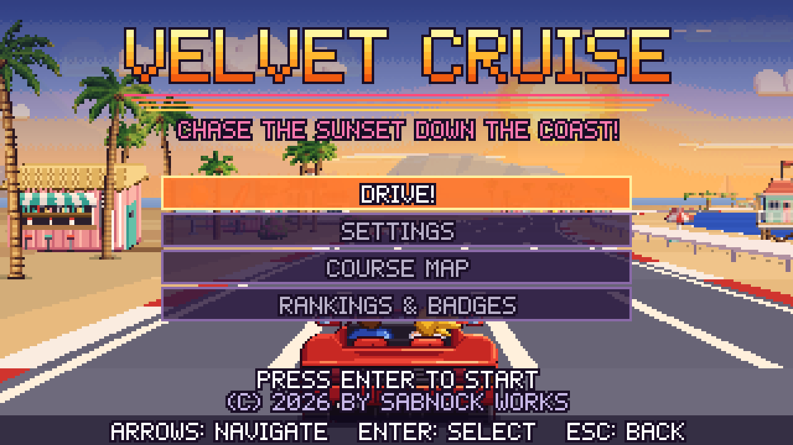
Retro arcade driving
Velvet Cruise
Chase the sunset down the coast!
Take a convertible down a seaside highway, or turn inland at the next fork. Race through fifteen stages, from sunny Palm Cove to snowy passes, desert roads and Neon City. Every run follows five stages to one of five finish lines.
Play with a keyboard or touch controls. Your personal bests, arcade scores and badges are saved in this browser.
Free to play while in development.
Feedback appreciated.
Keyboard controls
- ← →
- Steer
- ↑
- Gas
- ↓
- Brake
- Enter
- Start
Screenshots from the road
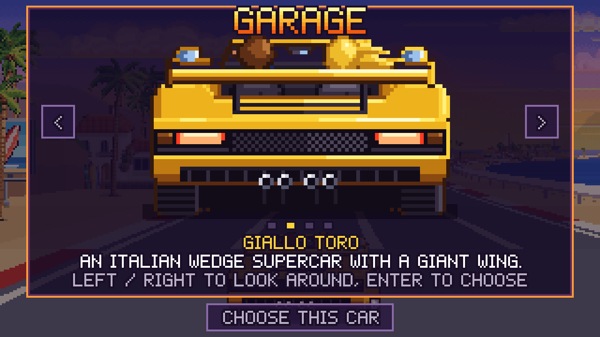
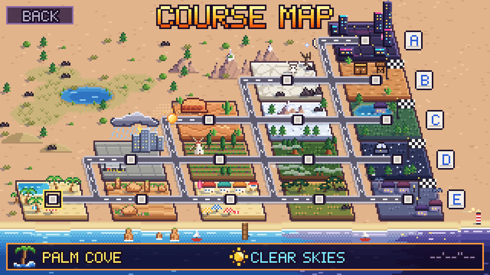
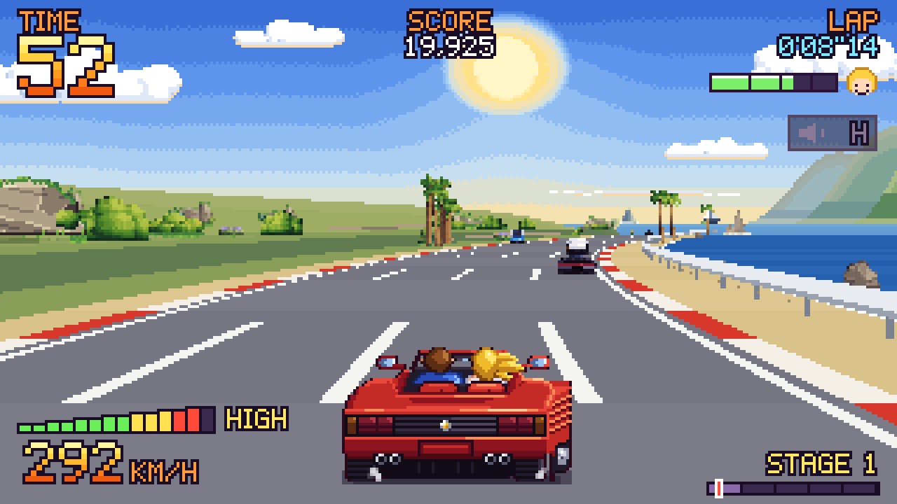
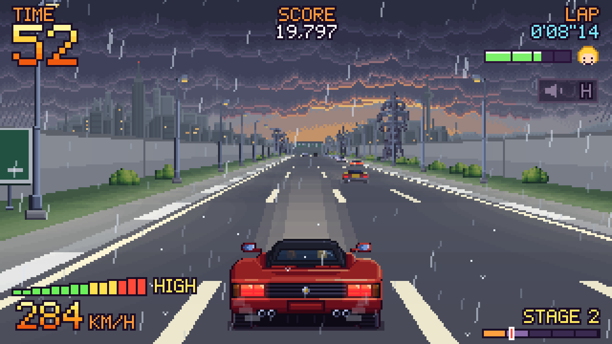
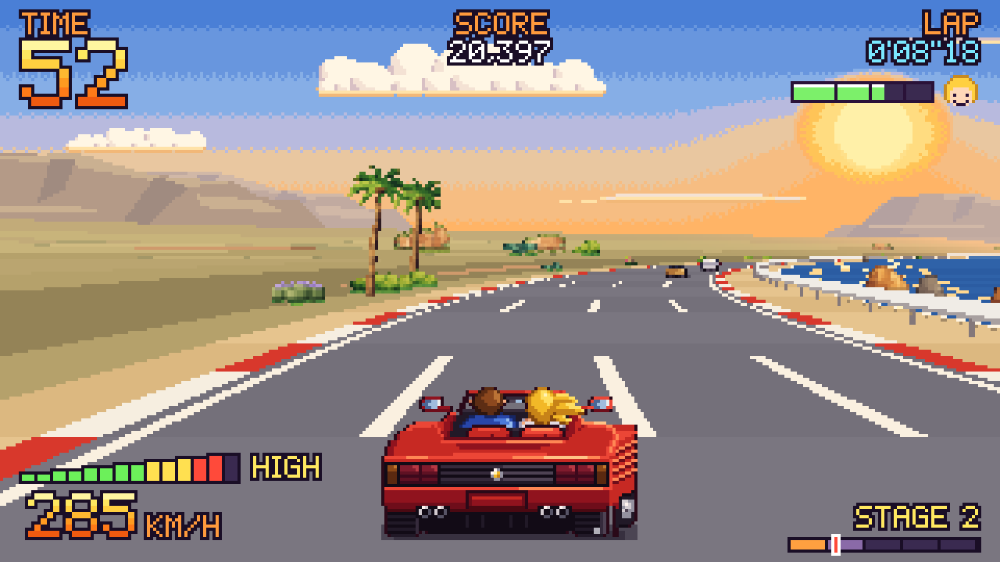
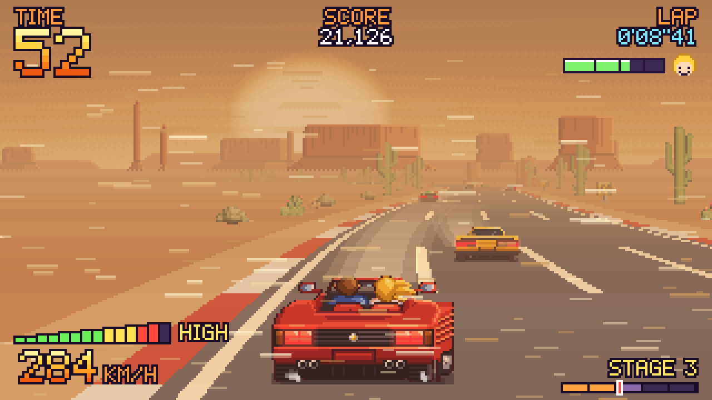
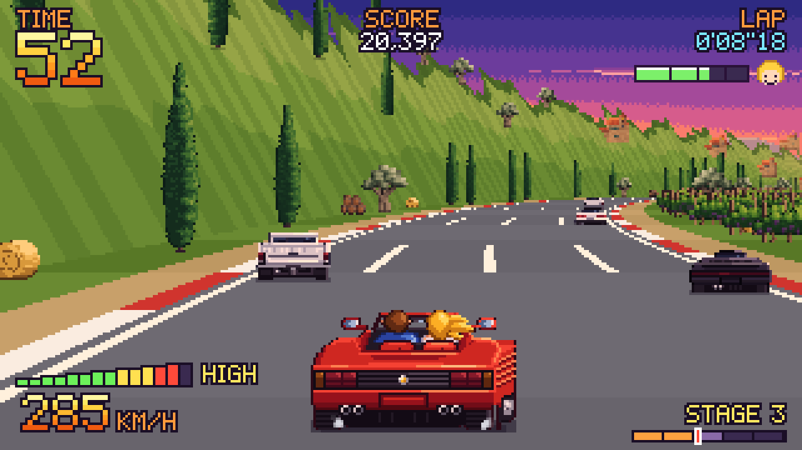
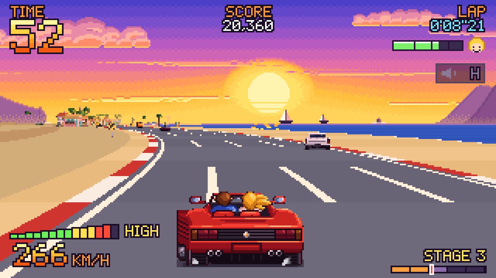
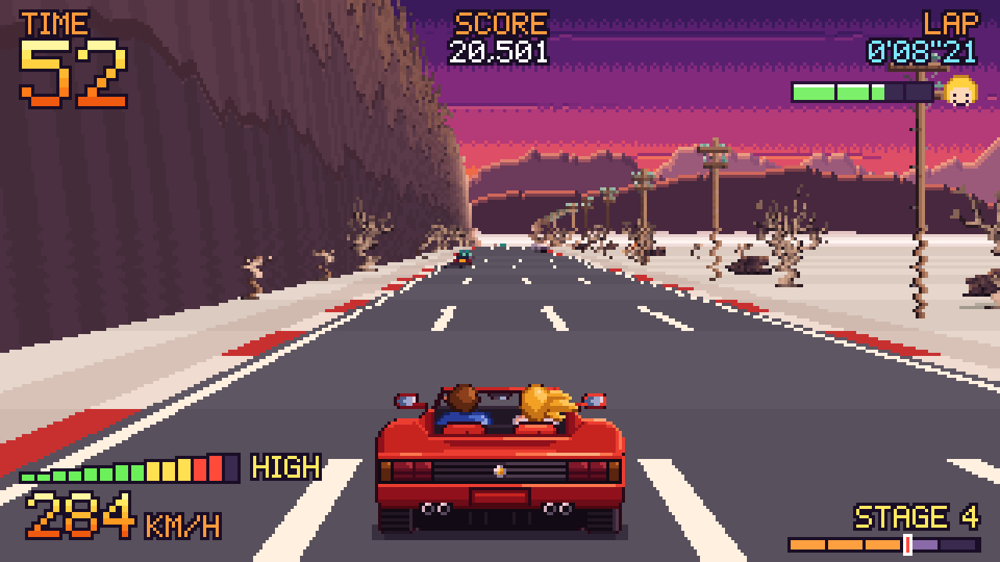
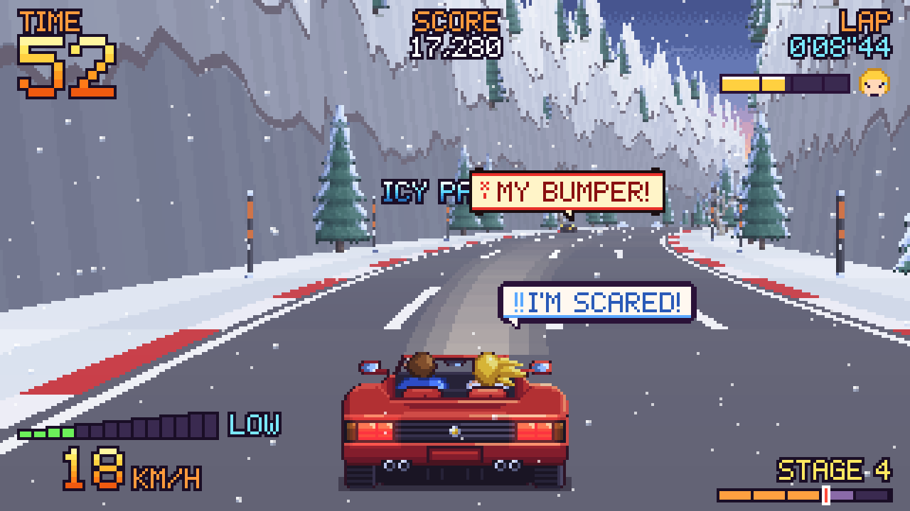
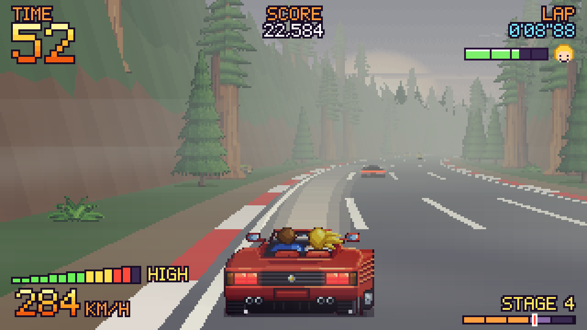
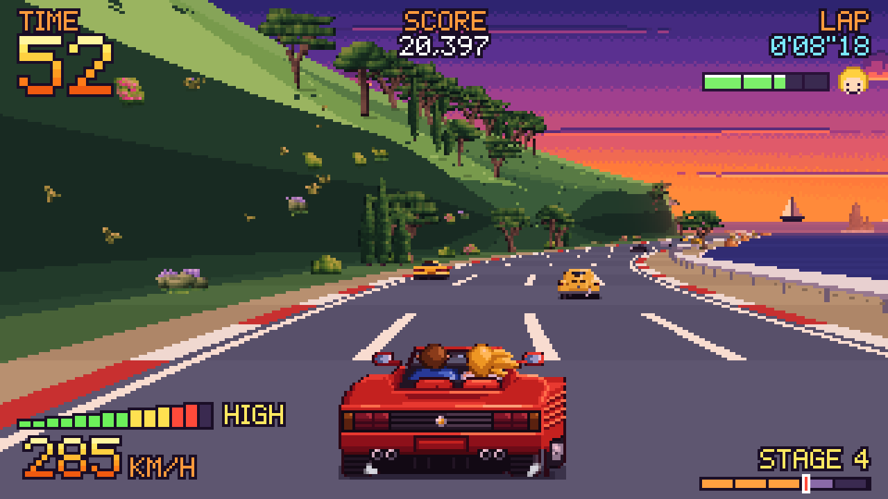
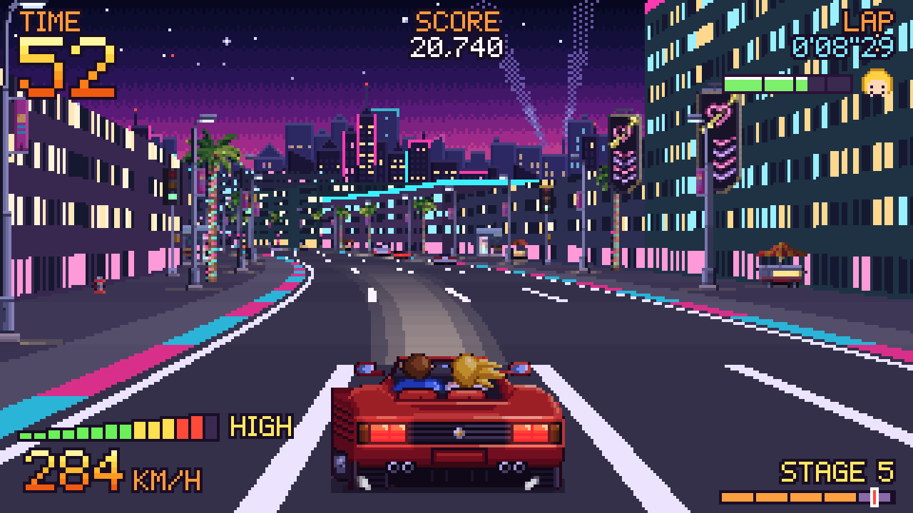
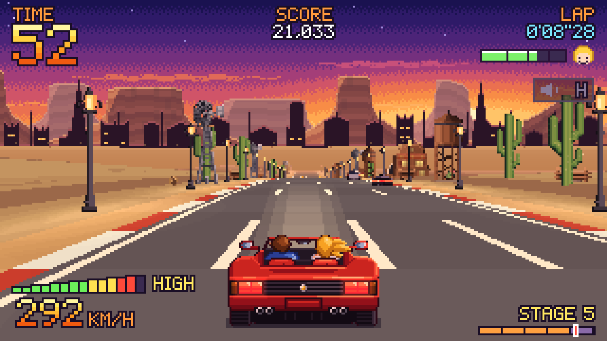
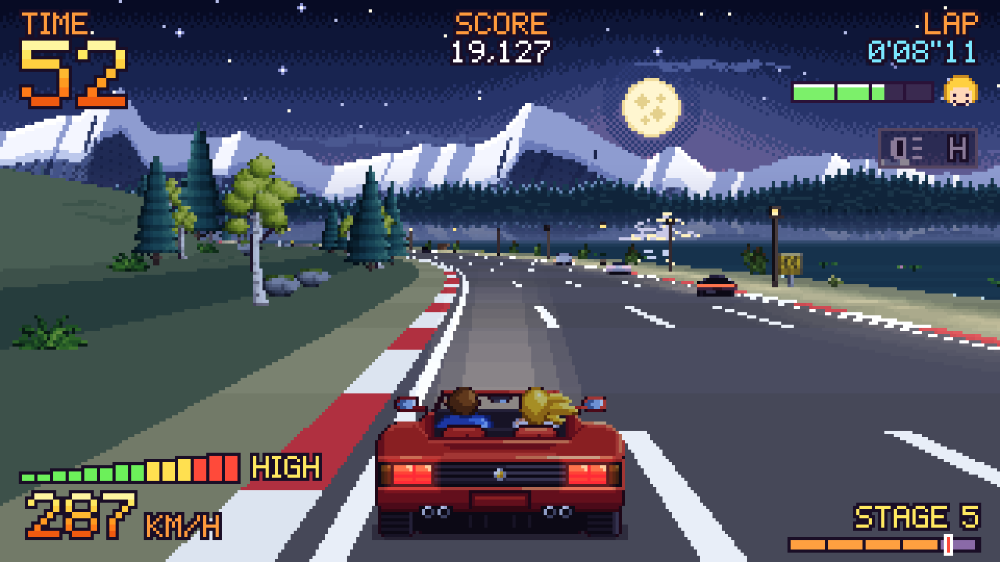
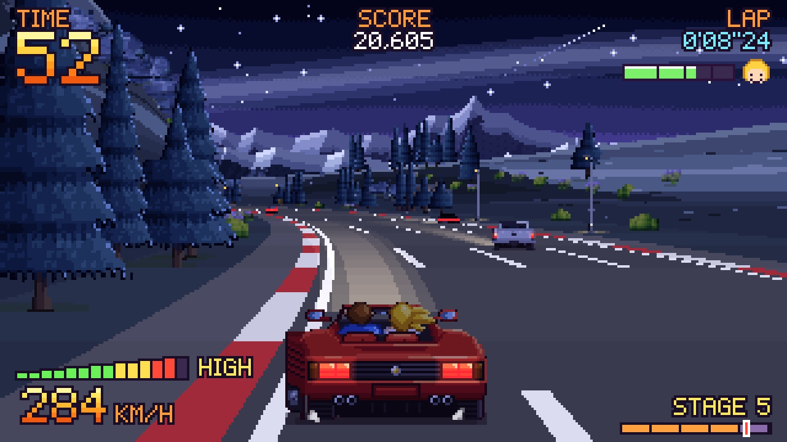
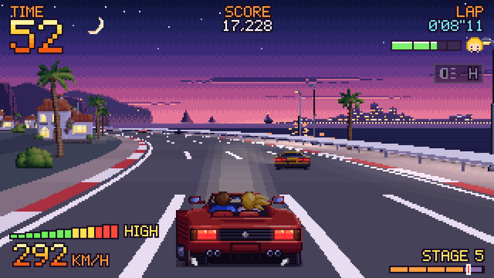